Ryan took me to Seattle for a week! We stayed in an Airbnb, which I am generally terrified of, but it worked out and we were not murdered in our sleep and none of my belongings went missing. The decor was questionable.
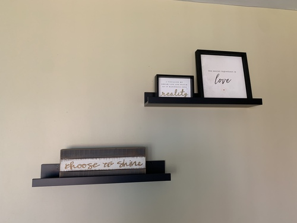 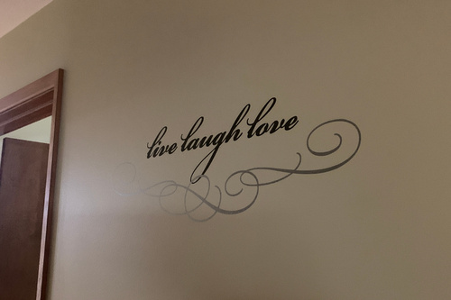I met up with my friend Makoto! I made him take me to Push/Pull. They have a large selection of zines. I looked at a few but nothing caught my eye.
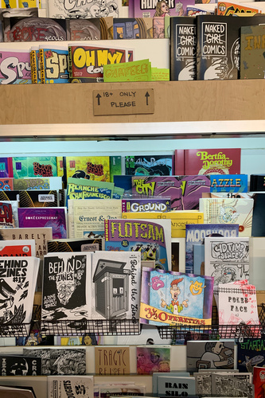What did catch my eye was a new line of in house fountain pen inks! They had a ton of colors but I was disappointed to see almost all of them were shimmer. I didn't buy any because of that.
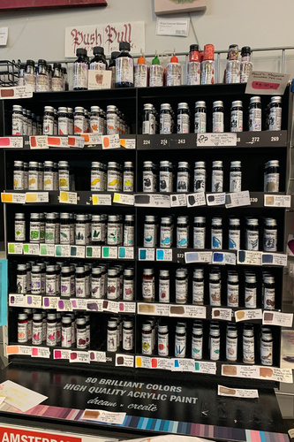 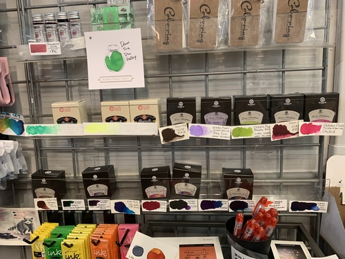They also carried the Jinhao Safari bootleg. The pen felt much cheaper than my real Safari, but was also $9 instead of $30. While the patent has expired on the Safari, Jinhao seems to be making bootlegs of other pens. I can't support that kind of business.
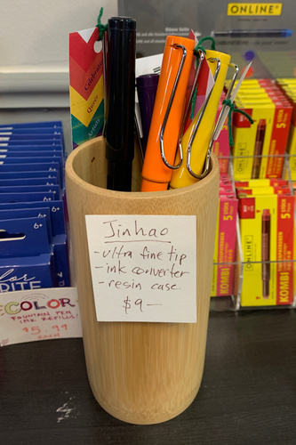 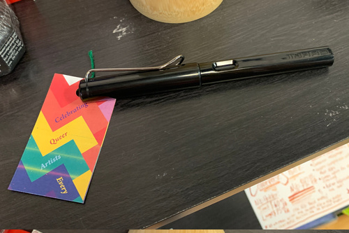The Airbnb was along the light rail in Northgate, so I had lots of chances for adventures. Northgate itself was pathetic. There was once a mall there, which has now been torn down and replaced with a pile of rubble. Interesting things that remained were: Barnes and Noble and Nordstrom Rack. I spent some time in Barnes and Noble curating my Amazon wishlist that will be ignored for Christmas and didn't bother to go to Nordstrom Rack because my clothing collection is a little ridiculous.
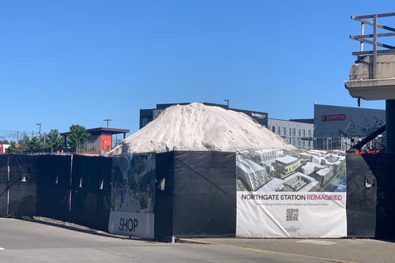The lightrail stations were plastered with WhatsApp and MulvadVPN advertisements promising you the best privacy possible and definitely no government backdoors! They would never! The advertising must work though otherwise they wouldn't be able to afford the space.
I really wanted to see which inks they had at Kinokuniya! It was pointed out by hors that I have 0 pink fountain pen inks, despite pink being my favorite color and all my pens being pink. I did some research online to see which inks I should be checking out and made a list. Kinokuniya doesn't carry any of the Sailor Studio inks, which I really wanted to see in person. Even more unfortunately, Kinokuniya has a swatch book, which I asked for, but all the colors are printed and not swabbed. What is the point?! Their prices were either the same or similar to JetPens or Goulet so I decided on Sailor Sakura-mori. They also had Pilot Hana-ikada, which was also on my list, but only the 50ml bottle.
I had the thought a while back that I should buy Cyan and Magenta watercolor tubes. I had been set loose in Seattle so why not now? No one was here to say I was taking too long deciding! My best friend had given me a gift card to use on Copics, but holy cow do I have enough Copics that I never use. I've been using it on other art supplies instead and was getting close to the end of it. I decided to do it and price checked the different art stores. Blick came out as the cheapest for Daniel Smith tubes. Artist and Craftsman Supply and Push/Pull had comparable prices. I picked Opera Pink but it was out of stock at all of the stores. I ultimately went for Manganese Blue Tint and Rhodonite Genuine. This should increase my color mixing options significantly! The scary part about CMYK is that I actually don't know what colors are created when mixing. They didn't teach me this in school! I'll figure it out.
I dragged Ryan around Seattle a bit into an alleyway near Pioneer Square to Peter Miller. I found it online looking for Lamy dealers, and every time I've been ready to go, either we got busy, or forgot, or it was closed. This time, we went! It was a small bookstore with a lot of books on design and architecture. He had a good sized section of high quality notebooks and stationery. He has quite a bit more in store than he does in his online shop. The man himself was very friendly as well. I would like to buy a pen from him someday, but his pink pens and my wallet were both lacking. Next time!
There's a McDonald's in Westlake, which has gotten much less safe to walk around in recent years. I was shocked to see they had completely closed off the dining area and the cashiers sat at the door.
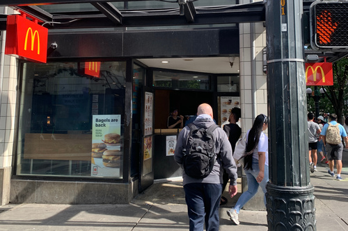Seen at "dystopian empire" Uniqlo. You can now buy ugly men's clothes judgement free. Not like there's a cashier to look at you funny, if for some reason your cashier gave a single c*rp.
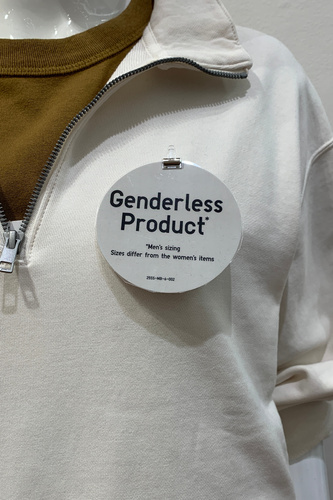We ran into the the Boba Festival in the U District. Sakuracon had a booth there because they were a sponsor and also had a cosplay contest. For those interested in entering, don't waste your time. It's rigged. But the man at the booth had flyers with Mizuki's name on it. And Ikuta?! Ikuta is the fox friend apparently and no longer part of Mizuki's name. Mizuki is permanent and the last mascot contest had 4 entrants. I forgot to ask who his designer was!
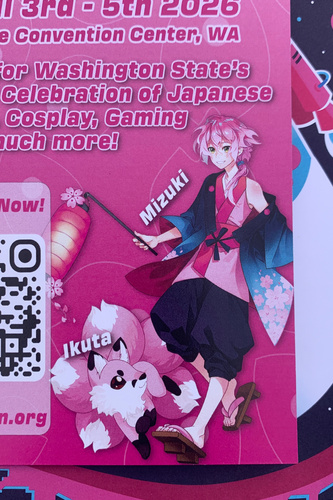A new-ish highlight of the Ave is Ancient Gate Coffee. I ordered the drip in both hot and cold for Ryan and myself and it was very good! I highly recommend!
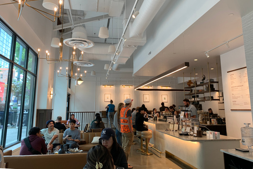The very bad tasting less delicious coffee of the trip was found in Ryan's temporary office. This thing was so fun!! You just pressed the button and out came the worst cup of coffee you could ask for! I pressed it so many times and regretted it every time.
Makoto also took me to Glazer's! The store looked a lot nicer than I expected. The staff was really friendly and kept asking if I needed help.
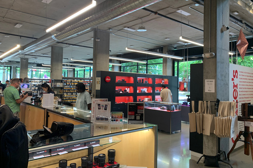I turned the corner into the Leica section unknowingly and enjoyed looking at the crazy prices! There was a $6k lens!!! A $4k URUSHI body?! Did you know Leica sells a $400 instant camera that uses Instax mini film as well as their own version of the film ($15 for 10 exposures)?
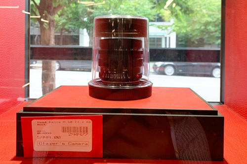 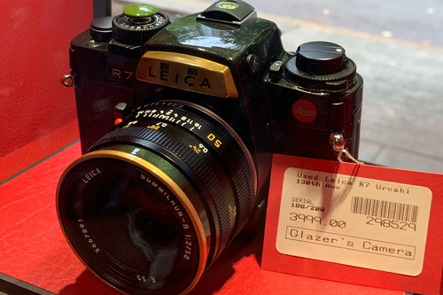They even had fridges of film and the chemicals needed to develop it. Also development services. Photography is alive in Seattle.
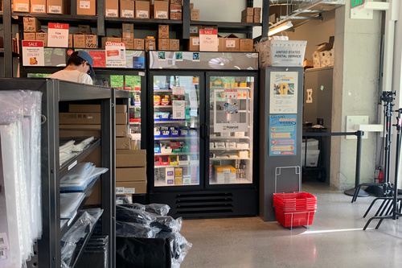I saw my favorite lens in the used vintage case for sale for only $50 so all of you guys should run out and buy one right now. For all you Kawaii Lovers, it looks like the Panasonic Lumix S9 comes in sakura pink! I would definitely be looking at buying that one if I was in the market for a new camera body.
We went to the Ballard Locks as well! It was awesome!!! You could see boats and ships and trains and fish and flowers and bunnies! They have a penny pincher machine which I utlized until I ran out of suitable change.
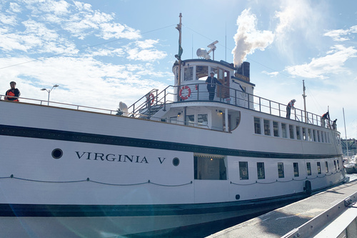
As always, my haul:
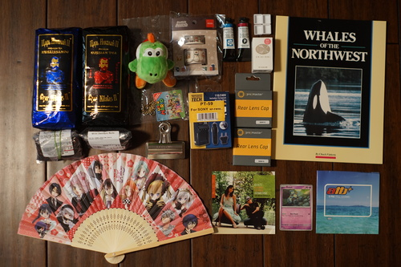Both gifts from my friend! I've never tried Renaissance before. I like it!
My friend brought these back from Japan for me!!! I love Yoshi so much!
The cashier tried to give my $20 in change back for my $20.10
I picked a good first pink ink. It's a very cute shade!
Found in a little free book box
The young Japanese man with snakebites who packaged these up for me was very friendly and kept trying to give me tips on brewing tea.
This one is SO GOOD. I had to buy more for fear I'd run out. BUY THIS ONE!!!
It's exactly as good as everyone says. This is my second Big Clip.
I needed one so badly.
Lens adapters really should come with these... I have now replaced the plastic bag I was using as a cover.
My friend brought this back from AX for me!!!!
Found at a bus stop

And a thrift haul, not Seattle related!
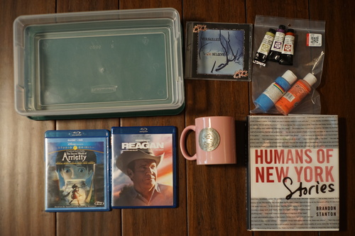bought to store my inks in
inside: Daniel Smith Undersea Green, Carbazole Violet, Quinacridone Burnt Orange
Things are good, things are bad, things are insane homeless people. It was a quick read. I don't think I will ever visit New York.